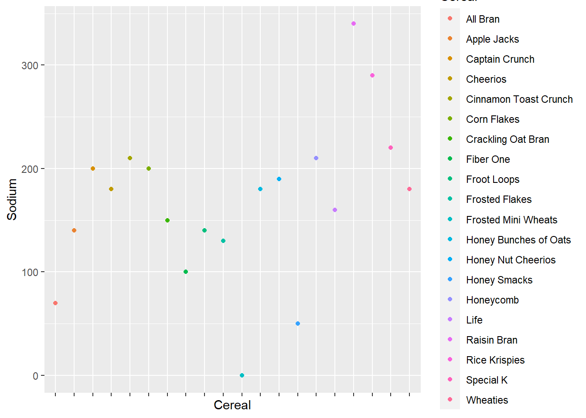
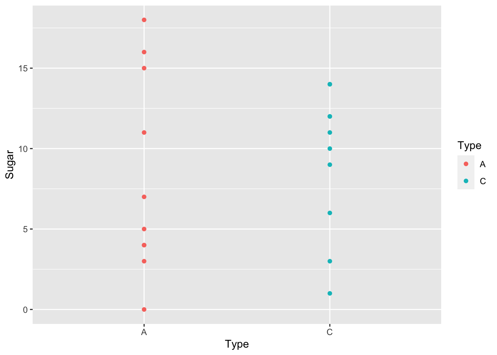

library(tidyverse)
library(ggplot2)
library(plotly)
library(gapminder)
knitr::opts_chunk$set(echo = TRUE, warning=FALSE, message=FALSE)Challenge 5 Instructions
challenge_5
railroads
cereal
air_bnb
pathogen_cost
australian_marriage
public_schools
usa_hh
Introduction to Visualization
cereal<- read_csv("_data/cereal.csv")
cereal# A tibble: 20 × 4
Cereal Sodium Sugar Type
<chr> <dbl> <dbl> <chr>
1 Frosted Mini Wheats 0 11 A
2 Raisin Bran 340 18 A
3 All Bran 70 5 A
4 Apple Jacks 140 14 C
5 Captain Crunch 200 12 C
6 Cheerios 180 1 C
7 Cinnamon Toast Crunch 210 10 C
8 Crackling Oat Bran 150 16 A
9 Fiber One 100 0 A
10 Frosted Flakes 130 12 C
11 Froot Loops 140 14 C
12 Honey Bunches of Oats 180 7 A
13 Honey Nut Cheerios 190 9 C
14 Life 160 6 C
15 Rice Krispies 290 3 C
16 Honey Smacks 50 15 A
17 Special K 220 4 A
18 Wheaties 180 4 A
19 Corn Flakes 200 3 A
20 Honeycomb 210 11 C Briefly describe the data
This data set contains the nutritional value and type of 20 different cereal brands. The data focuses on sodium and sugar in these specific brands along with the type of cereal it is. I believe that C = cold cereal and I am assuming A = hot cereal.
Tidy Data (as needed)
The data is already is tidy so in this case there is no reason to do a sanity check. I know that the data does is tidy because when I first read in the data is was easy to read and organized. Additionally, none of the data has to be pivoted_longer() nor is there a need for the n*2(k-2) formula.
Univariate Visualizations
# Creating a ggplot
cereal_1 <- ggplot(data= cereal) +
geom_point( mapping = aes(x = Cereal, y = Sodium, color = Cereal))
cereal_2 <- cereal_1 +
theme(axis.text.x = element_blank())
cereal_2
ggplotly(cereal_2)Bivariate Visualization(s)
new_cereal <- ggplot(data = cereal) +
geom_point(mapping = aes(x = Type, y = Sugar, color = Type))
new_cereal
ggplotly(new_cereal)In the bivariate graph I used the function ggplot() to compare the type with the amount of sugar that is in one of the 20 cereals. I then used the function ggplotly() to make the graph interactive so when you hover over a point it tell what type it is, how much sugar, and what the cereal brand is.